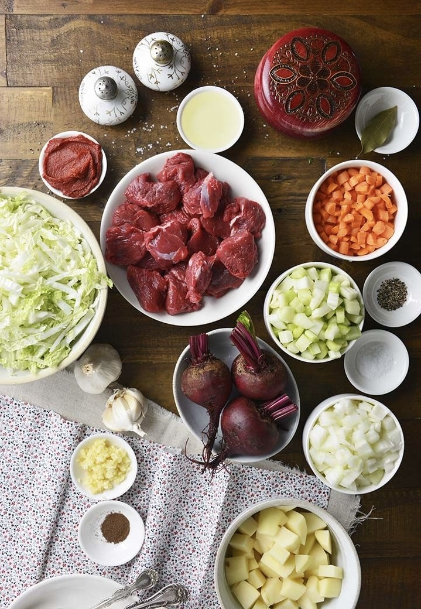

BORSCHT
"If coziness had a taste, it would be borscht."

Ingredients
- 300g beef or pork with bone
- 2 medium beets, 2 large potatoes
- 1 carrot, 1 onion, 1/2 head of cabbage
- 2 tbsp tomato paste
- Salt, pepper, bay leaf
- Fresh dill or parsley for serving
Recipe
- Boil the meat with bay leaf, salt, and pepper for about 40 minutes.
- Grate the beets, carrot, and onion. Sauté with tomato paste for 10 minutes.
- Chop the potatoes and add them along with the sautéed vegetables. After 10 minutes, add shredded cabbage.
- Cook for another 15–20 minutes until the vegetables are tender.
- Serve with fresh herbs and a dollop of sour cream on top.